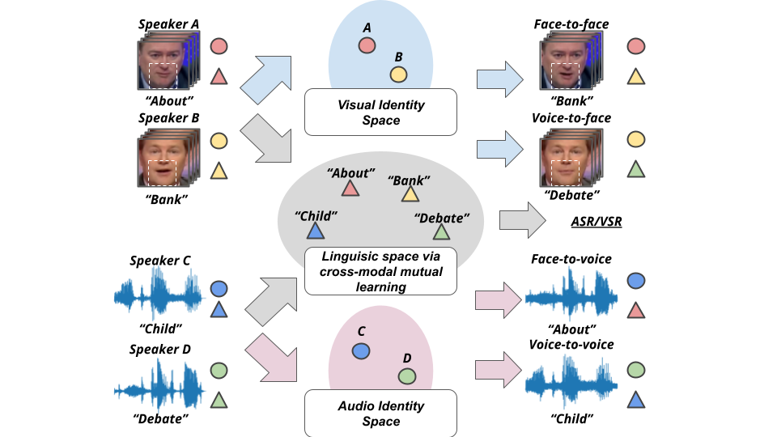
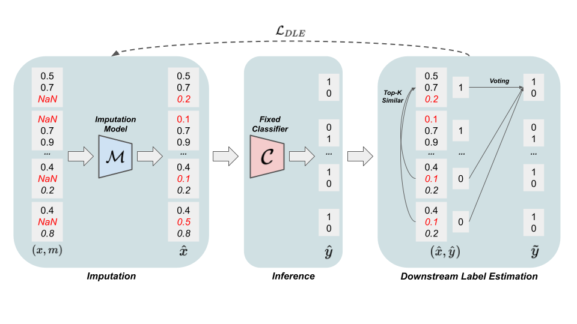
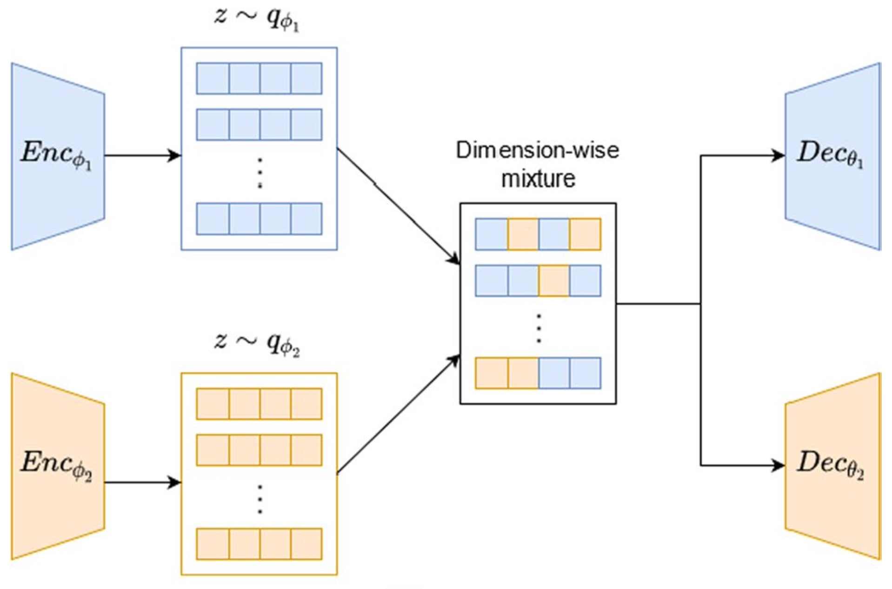
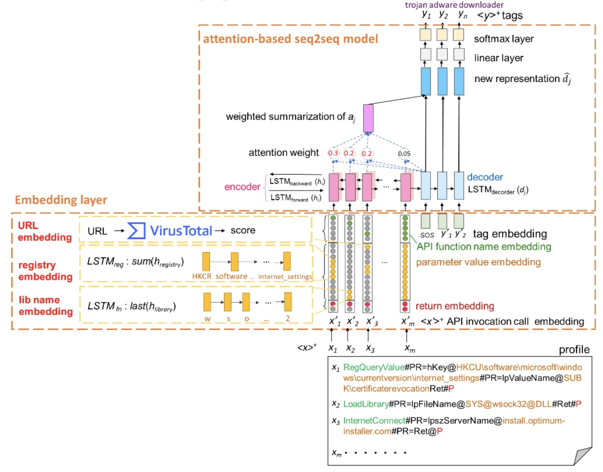

|
Chih-Chun (Jimmy) Yang I am a master student majoring in computer vision from the Robotics Institute at Carnegie Mellon University advised by Prof. Fernando De la Torre in the Human Sensing Lab. Prior to enrolling at CMU, I obtained an M.S. in computer science from National Taiwan University (國立台灣大學), where I was advised by Prof. Shou-De Lin in the Machine Discovery and Social Network Mining Lab (MSLab) and Prof. Yu-Chiang Frank Wang in the Vision and Learning Lab (VLLab). I'm passionate and experienced in generative-AI. My research interests focus on cross-modal learning and 3d vision, particularly vision-audio, vision-language, and 3d human motion topics. Email / Resume / Google Scholar / Github / LinkedIn |

|

Amazon |

Carnegie Mellon University |

National Taiwan University |
SAS |
National Taiwan University |
|---|
News
|
Publications |
|  |
Cross-Modal Mutual Learning for Audio-Visual Speech Recognition and Manipulation
Chih-Chun Yang, Wan-Cyuan Fan*, Cheng-Fu Yang*, Yu-Chiang Frank Wang AAAI Conference on Artificial Intelligence (AAAI), 2022 (Oral Presentation) |
|  |
SMITH: A Self-supervised Downstream-Aware Framework for Missing Testing Data Handling
Chih-Chun Yang, Cheng-Te Li, Shou-De Lin Pacific-Asia Conference on Knowledge Discovery and Data Mining (PAKDD), 2022 |
|  |
Bayesian Mixture Variational Autoencoders for Multi-Modal Learning
Keng-Te Liao, Bo-Wei Huang, Chih-Chun Yang, Shou-De Lin Machine Learning (MACH), 2022 |
|  |
Tagging Malware Intentions by using Attention-based Sequence-to-Sequence Neural Network
Yi-Ting Huang, Yu-Yuan Chen, Chih-Chun Yang, Yeali Sun, Shun-Wen Hsiao, Meng Chang Chen Australasian Conference on Information Security and Privacy (ACISP), 2019 |
|
Nice template borrowed from here |